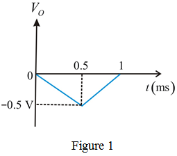
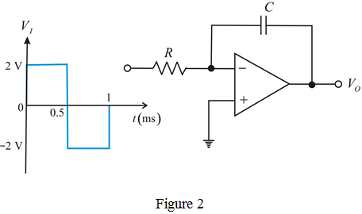
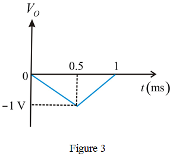

Refer to input voltage waveform in Figure P2.84 in the textbook.
Calculate the output voltage for .
Calculate the output voltage for .
The sketch of the output waveform is shown in Figure 1.

For, and , the miller integrator circuit is shown in Figure 2.

Calculate the output voltage for .
Calculate the output voltage for .
